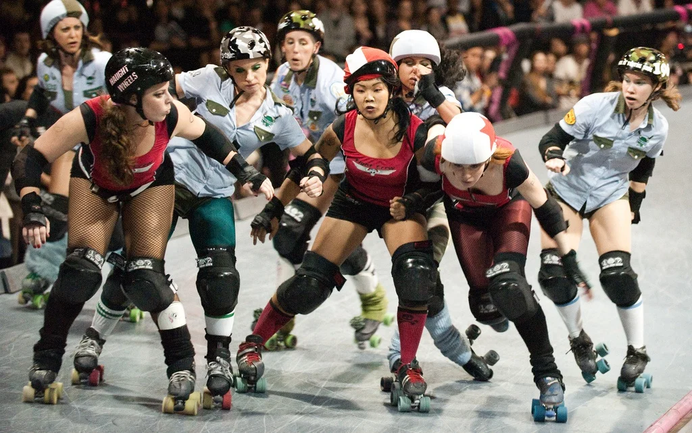
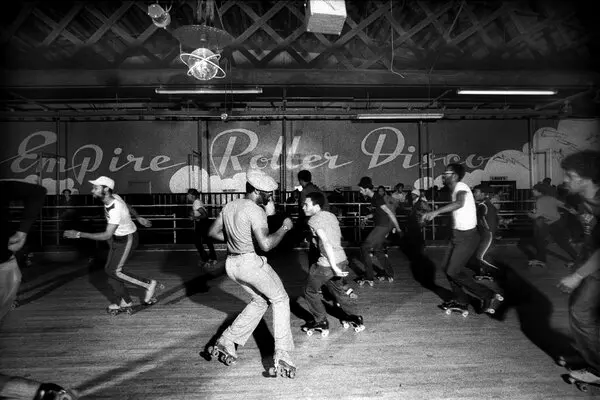
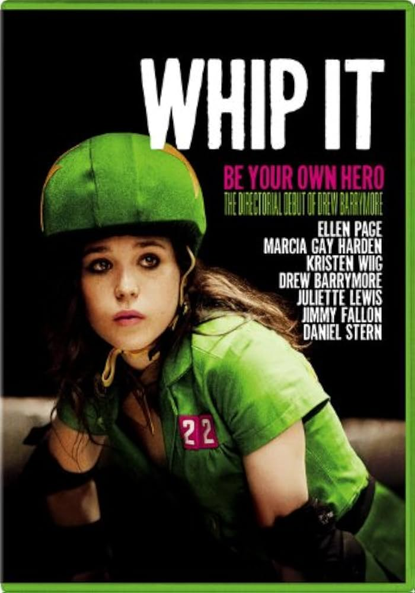

O que é a Patinação Quad?
A patinação quad, ou patinação tradicional, é caracterizada pelos patins que possuem quatro rodas dispostas em pares (duas na frente e duas atrás), lembrando a configuração de um carro. É a modalidade mais antiga e é famosa por oferecer uma base de apoio mais larga, sendo excelente para dança, equilíbrio e lazer.
Embora tenha tido seu auge nas décadas de 70 e 80 com a era Disco, a patinação quad vive um renascimento global, impulsionada pelas redes sociais e por novas modalidades competitivas.
Categorias de Patinação Quad
-
Roller Derby: Um esporte de contato e estratégia jogado em pistas ovais, majoritariamente por mulheres.
No Roller Derby, as jogadoras competem em times para ultrapassar as adversárias, unindo velocidade, força física e um forte senso de comunidade e empoderamento.

Maiores AtletasBonnie Thunders é uma lenda do Roller Derby moderno. Sua agilidade e visão de jogo a tornaram uma das atletas mais respeitadas do mundo na categoria.
-
Jam Skating e Roller Dance: Focada em dança, ritmo e coreografias sobre rodas, muito comum em ringues de patinação.
Essa categoria mistura elementos de breakdance, ginástica e dança clássica. É onde a fluidez do movimento é o principal objetivo.
Maiores AtletasBill Butler, conhecido como o "Padrinho da Roller Disco", foi fundamental para popularizar o estilo de dança sobre patins em Nova York durante os anos 70.

-
Park Skating (Quad): Adaptação do uso dos patins tradicionais para rampas de skate e bowls.
Diferente da patinação de dança, aqui os patinadores buscam altura nos saltos, grinds em quinas e manobras de impacto em skateparks.
Maiores AtletasMichelle Steilen (Estro Jen) é uma das principais responsáveis por levar os patins quad de volta aos parques de skate, fundando marcas e movimentos que inspiram milhares de novos patinadores.
Importância Cultural
A patinação quad é um símbolo de diversidade e inclusão. Desde a era dos "Roller Rinks" segregados que se tornaram espaços de resistência, até os dias atuais, o quad representa liberdade de expressão.
O estilo "retrô" dos patins quad também influencia fortemente a moda atual, com patins coloridos e acessórios que remetem à nostalgia das décadas passadas.
História
O patins quad foi patenteado em 1863 por James Plimpton, em Nova York. Antes disso, os patins em linha eram difíceis de manobrar, e a invenção das rodas em pares permitiu que as pessoas fizessem curvas com facilidade.
No Brasil: A patinação artística sobre rodas (geralmente praticada com patins quad) é muito forte em clubes e federações, rendendo diversas medalhas internacionais ao país.
A Patinação Quad na Mídia
O filme "Whip It" (Garota Fantástica, 2009), dirigido por Drew Barrymore, apresentou o Roller Derby para uma nova geração, destacando a adrenalina e a irmandade do esporte.

Recentemente, vídeos virais no TikTok e Instagram de patinadores dançando ao ar livre causaram uma escassez mundial de patins quad, provando que o esporte está mais vivo do que nunca.